AI Academy · Level 2 · Grade 7 · Week 22 · Student lesson
Nearest Neighbor Reasoning
Learn to understand, design, build, test and explain AI systems responsibly.
Project: Transparent Book Recommender
Before you start
Week 21: calculate distance before using a neighbour's label.
Plan time to read, investigate and explain. Keep predictions separate from observations.
Student lesson · 1 of 14
Your mission
Your learning target
I can compute absolute distances and rank training neighbours.
I can apply a declared neighbour count and distance tie rule.
I can evaluate neighbour predictions without using validation labels as neighbours.
Remember before reading
Close your notes first. A rough first answer helps us choose the right starting point; it is not a score for your ability.
Without opening the old lesson, explain one key idea from Similarity by Selected Traits. Give an example and a mistake that the idea helps you avoid.
Without opening the old lesson, explain one key idea from Sampling and Representation. Give an example and a mistake that the idea helps you avoid.
Without opening the old lesson, explain one key idea from Overfitting Intuition. Give an example and a mistake that the idea helps you avoid.
After trying, check the relevant lesson or ask your teacher. Change the part of your explanation that the evidence shows was wrong.
Week 22: Nearest-Neighbor Reasoning
A new item can be predicted from nearby labeled examples.
THINKER MISSION
Run a paper k-nearest-neighbors vote and resolve a tie.
Thinker name and date:
Readiness for the connected explanation
What does a fitted depth-one tree store, and what does it do with a new example?
This week’s end goal
By the end, I can order training neighbours, apply k and keep query labels out of prediction.
Student lesson · 2 of 14
Notice the evidence
PICTURE STORY
Notice → Predict → Explain
Begin with visible evidence. Do not explain more than the picture and information support.
MYSTERY
The learners must use nearest-neighbor reasoning to solve a problem. What information do they have? What decision or calculation do they make? What would count as evidence that it worked?
Three observations (what you can point to):
My prediction and the clue supporting it:
A closer explanation
A nearest-neighbour classifier predicts using nearby training examples rather than following a fitted tree. This week we store labelled examples, measure how different their feature values are from a new query, and let selected neighbours vote. Nearby means close under our chosen feature and distance, not necessarily similar in every real-world way.
Our new fictional dataset has a distance reading in centimetres and a separately reviewed lane label. Each row comes from a distinct trip, and validation trips are separate. Only the numeric reading measures similarity. IDs identify rows and break distance ties; they are not numeric features. These invented readings are not a robot safety system.
| ID | Reading in cm | Label |
|---|---|---|
| A | 2 | blocked |
| B | 4 | clear |
| C | 8 | clear |
| D | 10 | blocked |
| E | 12 | clear |
For this one-dimensional feature, distance is abs(training reading minus query reading). abs removes the sign. Set k=3 and give each selected neighbour one vote. Order equal distances by ID alphabetically, declared before scoring. In this binary, three-vote exercise the label vote cannot tie, but the distances can.
Student lesson · 3 of 14
See how it works
VISUAL MECHANISM
Input → Process → Output
Trace the information. At each stage, ask what changed and how you could test it.
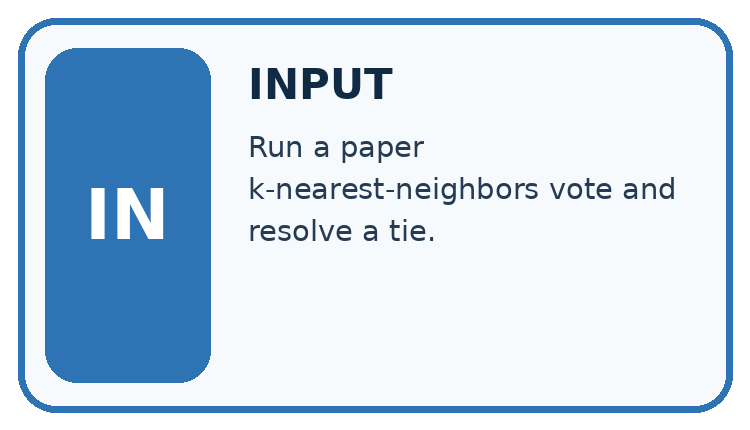
↓
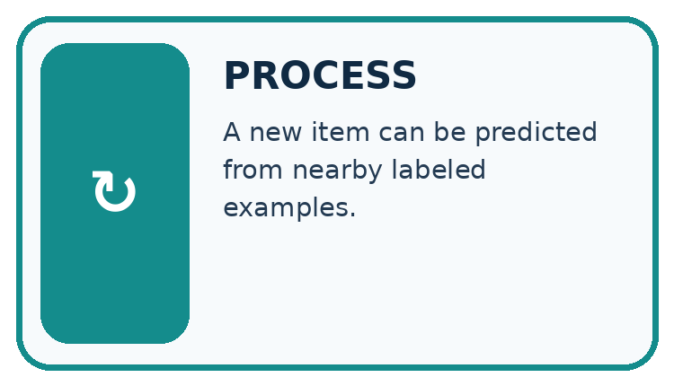
↓
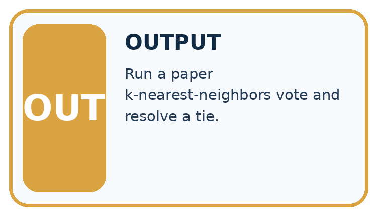
Which stage could fail even when the other two are correct? Explain:
A closer explanation
train = [("A", 2, "blocked"), ("B", 4, "clear"),
("C", 8, "clear"), ("D", 10, "blocked"),
("E", 12, "clear")]
query = 3
ranked = sorted((abs(x - query), item_id, label)
for item_id, x, label in train)
near = ranked[:3]
labels = [row[2] for row in near]
prediction = "clear"
if labels.count("blocked") > labels.count("clear"):
prediction = "blocked"
print([row[1] for row in near])
print(prediction)For query 3, distances to A through E are 1,1,5,7,9 cm. sorted orders tuples by distance first, then the unique ID. ranked[:3] takes the first three rows. The output is ['A', 'B', 'C'] then clear: one blocked vote and two clear votes.
If k were 1 under the same distance tie rule, A would win and predict blocked. Changing k can change a prediction. We declared k=3 for this exercise; do not choose k after seeing the desired answer and pretend the method was unchanged.
The code assumes unique IDs, numeric readings, only clear or blocked labels and at least three training rows. It does not validate those conditions. A larger k than the stored row count would not produce the promised number of votes. Keep unresolved review labels under a separate documented policy.
Connect the picture and the explanation
Point to the input, the deciding step and the result in this week’s visual. Explain the same step in ordinary words. A picture helps when you can say what each part represents.
Student lesson · 4 of 14
Compare the cases
CASE GALLERY
Four Tests, Four Kinds of Evidence
A system is not understood until it survives more than one comfortable example.
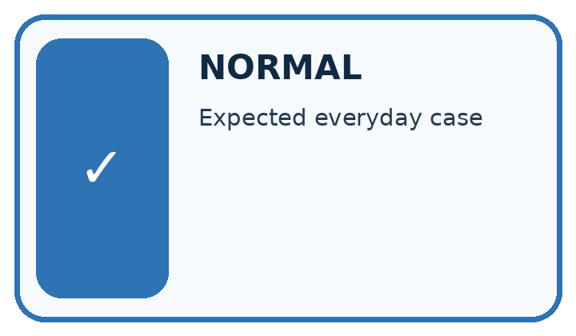
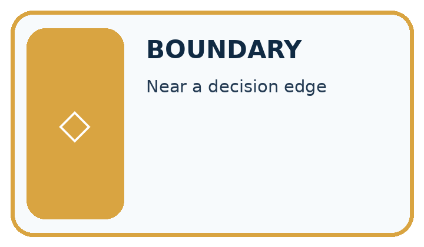
NORMAL CASE: predict and name evidence. BOUNDARY CASE: predict and name evidence.
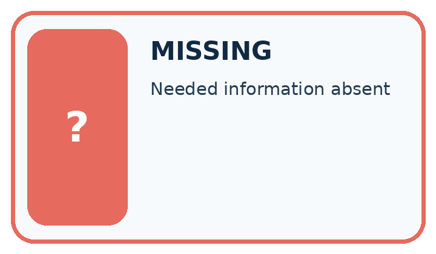
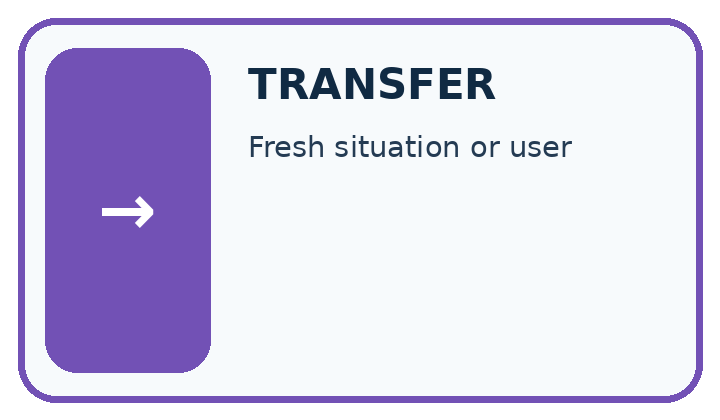
MISSING INFORMATION: predict and name evidence. TRANSFER CASE: predict and name evidence.
Which case is most likely to reveal a hidden assumption? Why?
Change one thing in the pictured case
Change: Move query from 7 to 9 while keeping training fixed.
Prediction: Order becomes C,B,D,A; k=1 predicts compact and k=3 predicts extended.
Reason: Distances are C=1,B=3,D=3,A=7; B beats D by the ID tie rule.
Student lesson · 5 of 14
Words that unlock the idea
VOCABULARY LAB
Words You Can Use to Reason
A definition matters when you can recognize the idea, use it, and contrast it with a near-miss.
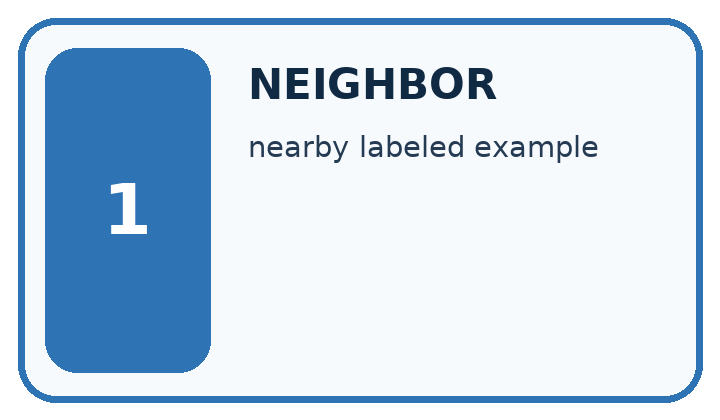
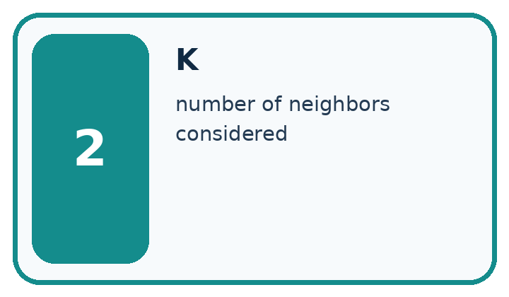
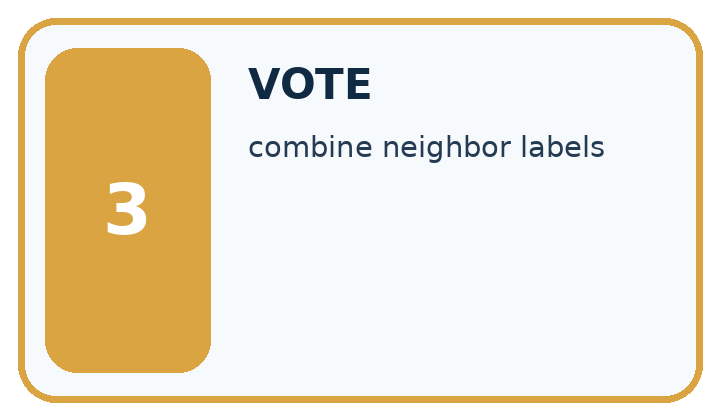
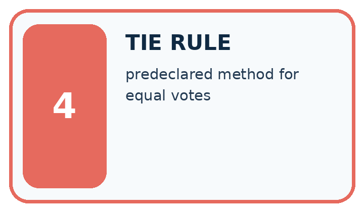
| Word | My own example | Not this / boundary |
|---|---|---|
| neighbor | An example close to another under a specified distance measure. | |
| k | In k-nearest neighbours, the number of nearby examples considered in the prediction. | |
| vote | A contribution to a choice, such as one neighbour's label in a classification decision. | |
| tie rule | A predefined method for handling candidates with equal scores or conflicting nearest labels. |
Words used in the closer explanation
| Word | Meaning |
|---|---|
| Distance | A numerical measure of difference between selected feature values |
| Neighbour | A stored training example close under the chosen distance |
Student lesson · 6 of 14
Follow a worked example
WORKED EVIDENCE
Reason Step by Step
Predict first. Then check each step. A correct answer without visible reasoning is incomplete evidence.
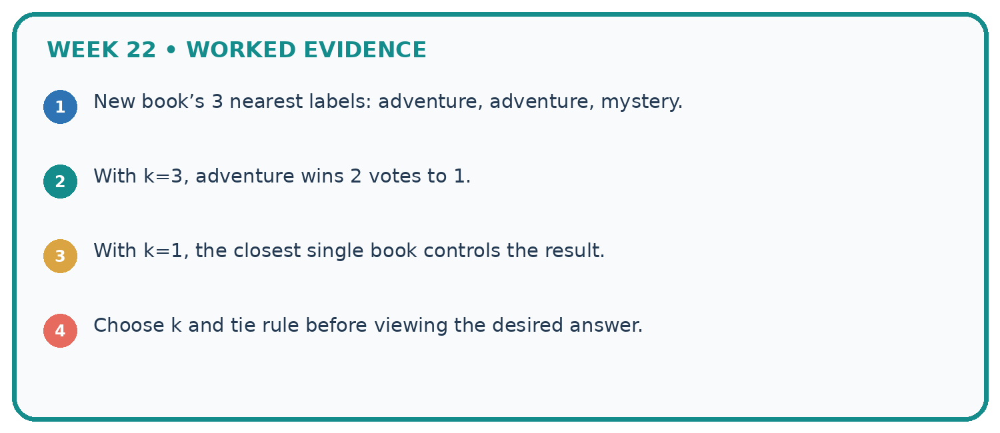
1. New book’s 3 nearest labels: adventure, adventure, mystery.
2. With k=3, adventure wins 2 votes to 1.
3. With k=1, the closest single book controls the result.
4. Choose k and tie rule before viewing the desired answer.
Recalculate, retrace, or restate the reasoning in your own representation:
CHECK Did the evidence answer the exact question? Did the total, path, or source record stay consistent?
A closer explanation
Three selected neighbours for query 3
Store the training examples and the method settings. At prediction time, compare the query only with stored training examples. Do not add the query’s reference label or other validation labels to the neighbour pool. No cutoff or tree is fitted here, but retaining training examples is still part of the learning method.
A vote share of two out of three describes these neighbours. It is not a verified two-thirds probability that the new scene is clear. A prediction can be wrong even when the nearest examples agree.
Learn from the worked case
Cover the result before checking it. Say what is given, choose the procedure, and follow one step at a time. Then uncover the result and explain your first mismatch. Ask why a step is allowed, not only what number it produces.
A pictorial worked case: Nearest Neighbor Reasoning
A fictional one-feature classifier predicts compact or extended book format.
The facts we will use
Stored training rows: A at 2 units compact, B at 6 extended, C at 8 compact, D at 12 extended. Query is 7.
Distance is absolute difference; ties sort by ID; tied category vote chooses compact.
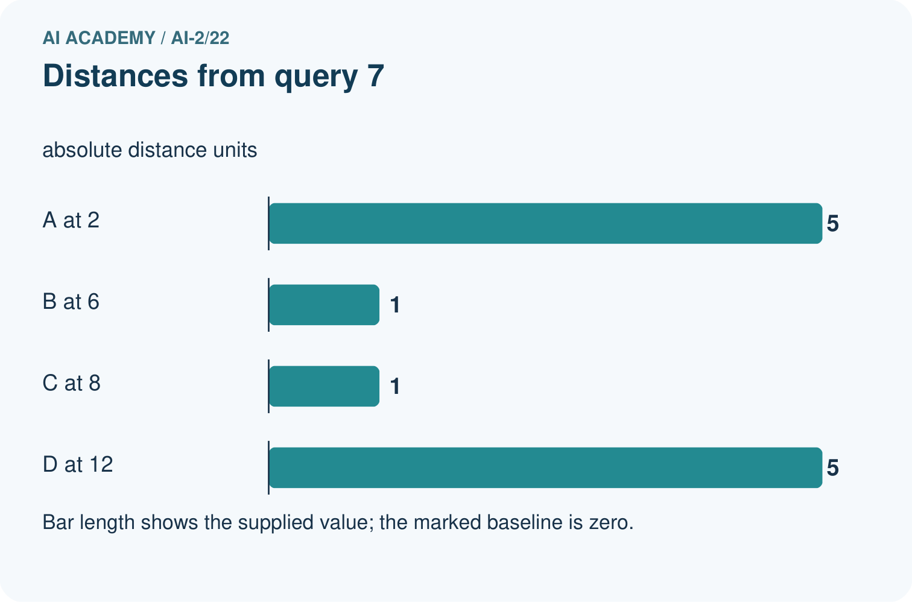
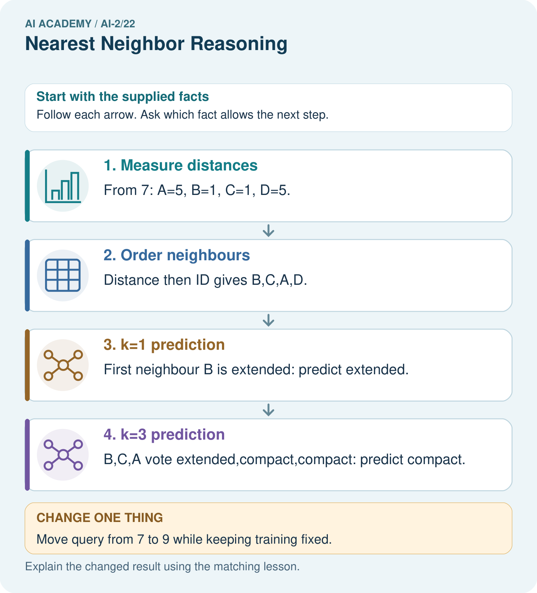
Read the picture one step at a time
Why this result follows
Changing k changes how many training neighbours vote, even though all distances remain fixed. The query’s reference label must not enter the stored pool before predicting. Tie policies make ordering reproducible; without them, list order could unexpectedly determine the single-neighbour result.
What this example does not establish
Nearest-neighbour votes depend on feature representation; they are not calibrated probabilities or guaranteed correct labels.
Student lesson · 7 of 14
Find and repair a mistake
ERROR DETECTIVE
Compare → Diagnose → Repair
Do not patch the answer. Find the earliest unsupported assumption, wrong step, or weak evidence.
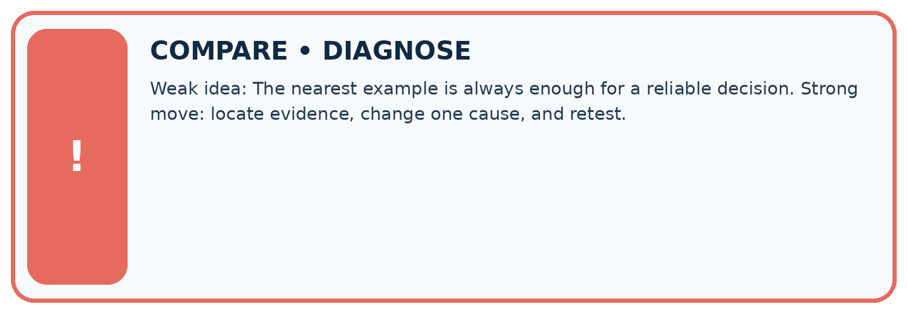
| Evidence record | Expected | Actual | Likely cause / next test |
|---|---|---|---|
| normal case | works | ||
| boundary case | stated rule | ||
| missing input | safe response | ||
| fresh transfer | generalizes |
Repair one cause. Why is this repair better than changing several things?
A closer explanation
All distances here use one feature measured in the same unit. With multiple features, their units and scales affect which examples appear close. A large numerical range can dominate a distance calculation. Next week we will address scaling and learn any scaling values from training data only.
Identical readings from different trips can have different labels, and an exact match does not certify truth. Keep related examples grouped across splits as in Week 6. Testing an example against a pool containing itself can make a one-neighbour score misleadingly high; it does not show performance on a new trip.
Student lesson · 8 of 14
Practise together
LOGIC STUDIO
Trace Before You Run
Block code, pseudocode, tables, and diagrams are different ways to expose the same reasoning.
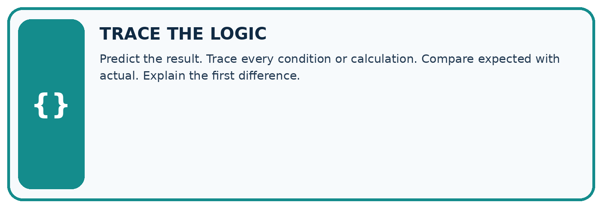
SET evidence_record PREDICT expected_result RUN one normal case and one boundary case COMPARE actual_result with expected_result IF different: locate first cause; change one factor; RETEST EXPLAIN result, limitation, and next safe step
Trace one input. Which line changes the state or chooses a path?
A closer explanation
Keep k=3 and the original five training rows. Validation queries with reference labels are (3,blocked), (9,blocked), (11,clear). Their selected neighbour IDs are A B C, C D E, and D E C respectively. Each group votes clear. Only the last prediction matches, so accuracy is 1/3, about 33.3 percent.
The training-majority baseline also predicts clear because three training labels are clear and two are blocked. It gets the same 1/3 on these validation rows. Record all distances, selected IDs and errors. Trying more k values is a development choice to document; preserve a separate final test for a final evaluation.
Practise with less help: Apply neighbour and tie rules
Use workbook W2 for the connected example “Nearest neighbours and distances”. First fill the input and rule boxes. Try the middle steps before asking for a hint. After a hint, try the next step yourself.
| Plan | Do | Check |
|---|---|---|
| What is given? Which rule or procedure applies? | Record each intermediate step. | Does the result follow? What remains unknown? |
Explain your trace to a partner. Your partner points to one step to check. Swap roles on the next case. Each person writes their own explanation.
Check your reasoning
Use the worked case for Nearest neighbours and distances. Proposed explanation: “A negative difference is a negative distance”. Decide whether this explanation is supported. Point to the step or supplied fact that decides; explain your repair if needed.
Answer on your own before discussion. If you are unsure, say which step you need help with.
Explain the picture
Why do k=1 and k=3 disagree for the original query?
This is supported practice. Keep the separately named independent case for an attempt before feedback.
Student lesson · 9 of 14
Run the investigation
EVIDENCE LAB
Predict → Test → Record → Explain
Keep expected and actual results separate. Surprises are useful data when recorded honestly.
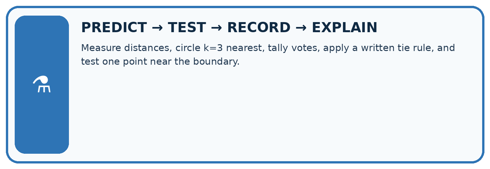
Measure distances, circle k=3 nearest, tally votes, apply a written tie rule, and test one point near the boundary.
| Test / input | Prediction | Actual | Evidence / calculation | Change or keep? |
|---|---|---|---|---|
| normal | ||||
| boundary | ||||
| missing | ||||
| fresh transfer |
What did the hardest test teach you that the normal test did not?
Plan → try → check
Before trying: what do I expect, and why? While trying: which step could first go wrong? Afterwards: what did I actually observe, and what should change? Keep “not run” if you only traced the procedure.
Student lesson · 10 of 14
Build your understanding
MASTERY
From Knowing the Word to Owning the Idea
Move upward only when you can produce evidence without copying the worked example.
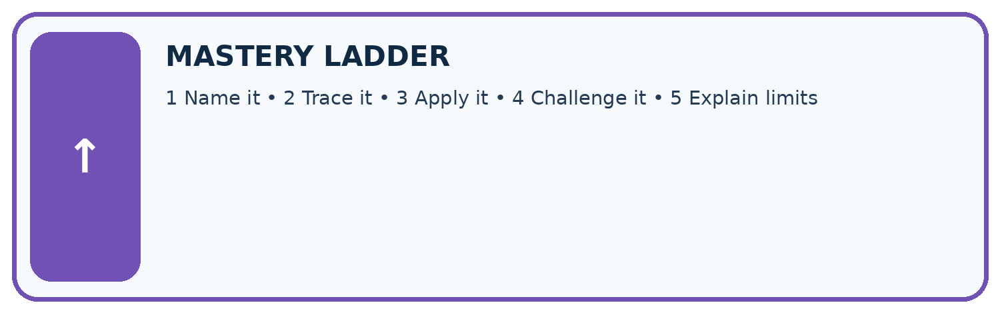
1 • NAME: Define the concept without repeating the textbook.
2 • TRACE: Show the information, state, branch, calculation, or evidence path.
3 • APPLY: Solve a different example independently.
4 • CHALLENGE: Find a boundary case, counterexample, or unfair outcome.
5 • EXPLAIN LIMITS: Say when the result should not be trusted or used alone.
My strongest evidence of independent understanding:
Student lesson · 11 of 14
Connect your project
CUMULATIVE PROJECT
Transparent Book Recommender
Every week adds one inspectable piece. The system must show how it reached a result.
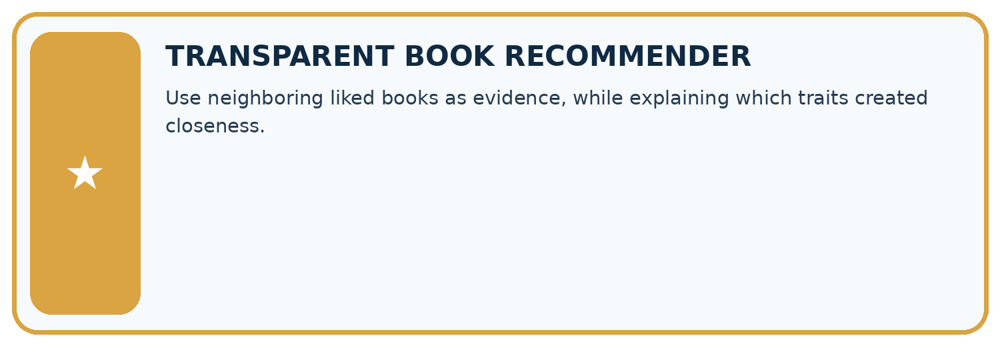
THIS WEEK’S CHECKPOINT Use neighboring liked books as evidence, while explaining which traits created closeness.
SYSTEM MAP Reader need → allowed inputs → transparent rule or score → ranked candidates → explanation → test record → human decision
What will you add, change, or verify in the project this week?
What should remain under human control?
RESPONSIBLE DESIGN Collect only necessary information. Show uncertainty and limits. Never confuse a ranking with a fact about a person.
Evidence for your project
Retain recommender neighbour IDs, distances, k and tie decisions so similar-book explanations can be audited.
Student lesson · 12 of 14
Show what you know
INDEPENDENT MASTERY PROOF
Explain • Transfer • Test • Defend
Complete this page without copying the worked example. Your reasoning matters more than decoration.
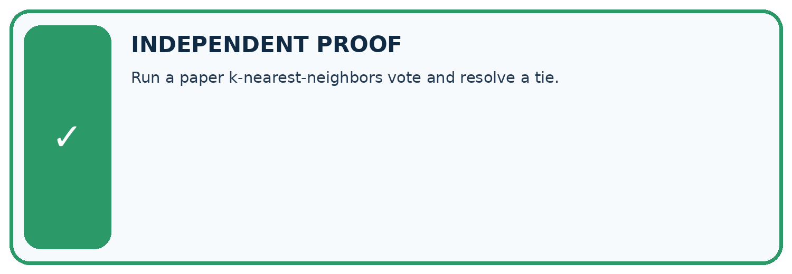
CHALLENGE Run a paper k-nearest-neighbors vote and resolve a tie.
1. My fresh example, trace, calculation, or design:
2. My evidence that it works (include a boundary or missing-data case):
3. One limitation, fairness concern, or situation needing human review:
SELF-CHECK □ I explained the mechanism □ I used evidence □ I tested a fresh case □ I named a limitation □ I can answer ‘why?’
Student lesson · 13 of 14
Study a complete case
Week 22 Worked case
Use the supplied details to practise the weekly concept before attempting the independent question. This case extends the illustrated lesson.
The situation
A=[1,1] liked, B=[1,0] disliked, C=[0,0] disliked; query=[0,1].
The question
Find nearest neighbours using differing-trait distance and k=1.
Worked explanation
A and C tie at distance one; B is distance two. Conflicting nearest labels require a predefined tie policy or uncertainty.
Explain it in your own words
Which detail supports the answer, and why does it matter?
Trace the supplied case visually
A nearest-neighbour tie needs a policy
| Evidence or stage | Value or result |
|---|---|
| A [1,1], liked | 1 |
| B [1,0], disliked | 2 |
| C [0,0], disliked | 1 |
A=[1,1] liked, B=[1,0] disliked, C=[0,0] disliked; query=[0,1].
Find nearest neighbours using differing-trait distance and k=1.
A and C tie at distance one; B is distance two. Conflicting nearest labels require a predefined tie policy or uncertainty.
Student lesson · 14 of 14
Try a new case independently
Independent case: Find neighbours independently
New training rows are P at 1 cm clear, Q at 5 blocked, R at 7 blocked, S at 11 clear, T at 13 blocked. For query 6, give all distances, order the IDs by distance then alphabetically, and predict with k=1 and k=3. Using the same training pool and k=3, score validation (6,blocked),(10,clear),(12,blocked). Compare the training-majority baseline.
Attempt this case before feedback. Record any help. Earlier examples below are further practice; a case already practised with feedback cannot establish fresh transfer.
Week 22 Independent application
Close the worked explanation. Apply the idea to this different question without copying.
Training items have one numeric feature: A=2 with label short, B=8 with label long. A new item has value 6. Use absolute distance to choose its nearest neighbour.
My answer, with a trace, calculation or supporting evidence
Create and test
Change one relevant detail. Predict the result before testing. Include a boundary or missing-information case when it helps reveal a limit.
My changed input and expected result
Connect to your project
Use neighboring liked books as evidence, while explaining which traits created closeness.
The evidence I will keep
Your teacher has the independent answer and scoring criteria. Complete the matching workbook week to keep your practice evidence together.
Transfer practice from the original programme
A query has nearest books A and B at distance 1, with conflicting labels; C is distance 2. A program chooses whichever row occurs first. Explain the risk and define a reproducible alternative.
Use feedback to improve
Attempt the independent case before hints. Record whether you worked alone, used a hint or followed a model. After feedback, fix the first unsupported step and explain why it changed. A later check uses a changed case, not a copied answer.